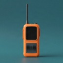
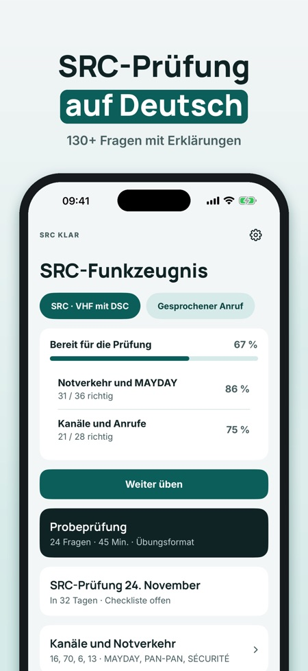
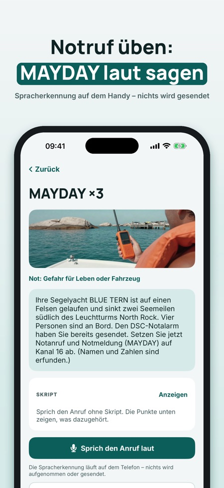
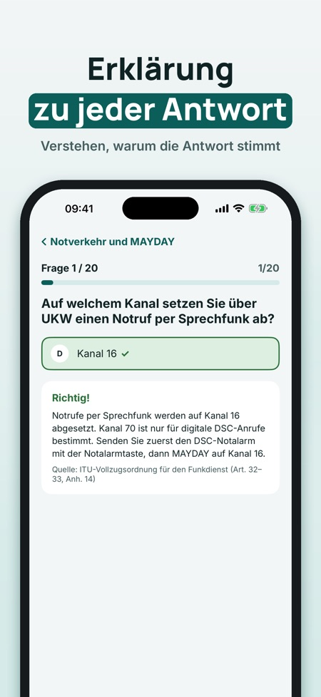

UKW-Funkzeugnis: Fragen & Test. Übe für die SRC-Prüfung: Fragen mit Erklärung, Prüfungssimulation, UKW-Kanäle und einen Notruf, den du laut sprichst – auf Deutsch und offline.



SRC Klar hilft dir, für das Short Range Certificate (UKW mit DSC) zu üben – mit Funkverfahren, die du mit deiner Stimme übst.
20 Fragen, eine vollständige Prüfungssimulation, die Begriffe und die Checkliste kannst du ohne Kauf nutzen. Die Vollversion ist ein Einmalkauf und schaltet alle Fragen, Simulationen und das Üben der Funksprüche mit der Stimme frei. Kein Abo.
SRC Klar ist unabhängig und nicht mit Behörden oder Prüfungsausschüssen verbunden. Die Prüfung legst du beim Prüfungsausschuss ab.